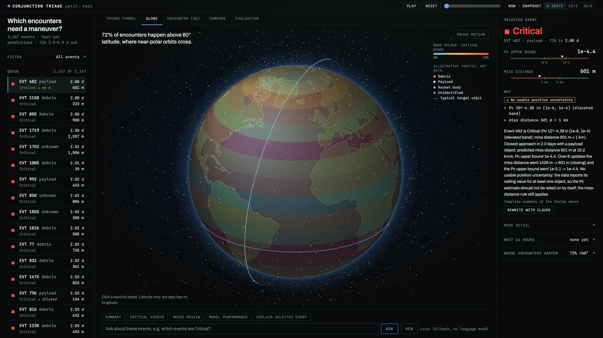
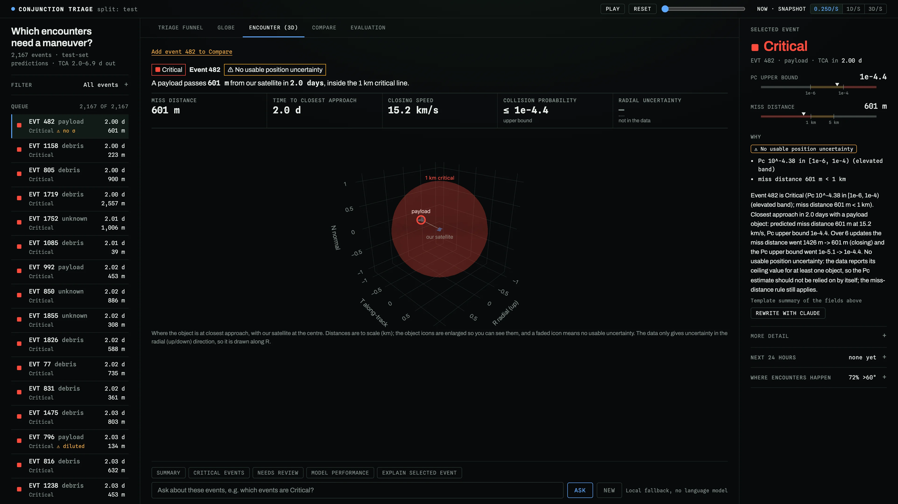
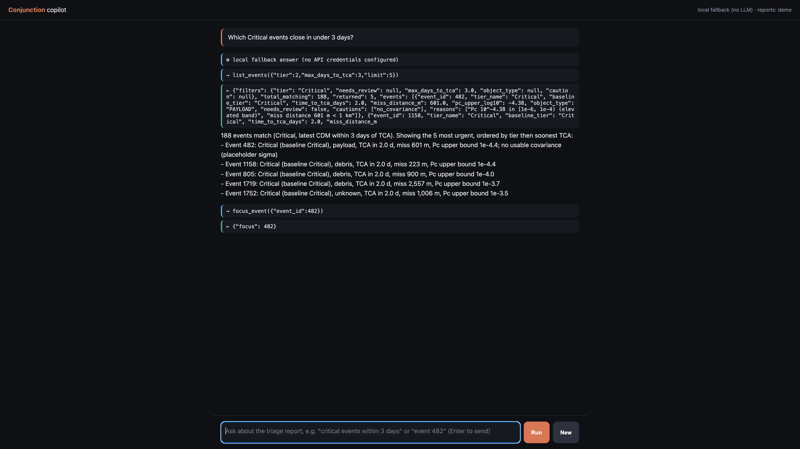
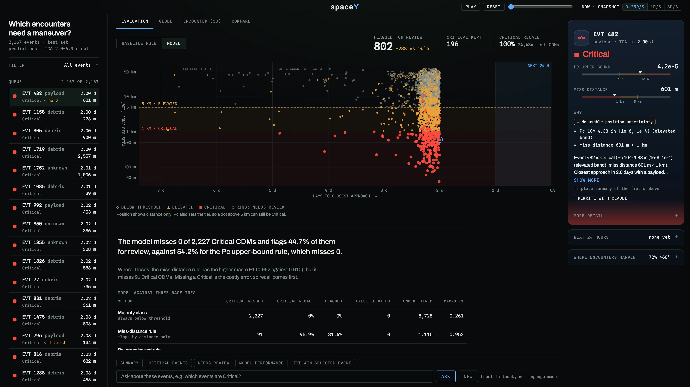

Autonomous SG 2026 · Airbus Challenge #1 · the stack
SECOND LOOK
conjunction triage
Every team here will predict collision risk. Second Look is built so it can never hide a Critical.
1 DATA
2 RISK PIPELINE
3 REPORT FILES
4 SERVER
5 DASHBOARD
Tommy · model, API, PM Franky · explanations, 3D, Compare Reagan · dashboard Kalent · independent evaluation
1The problem · the user
Today's rule flags more than half of all warnings
The user
A conjunction analyst on a satellite operator's flight dynamics team
54.2%
of 24,484 test CDMs are flagged by today's rule (Pc upper bound or miss distance over a threshold)
4,526 of them are truly below threshold

OUR DASHBOARD · BASELINE RULE
SOURCE · data/demo/metrics.json · data/demo/events.json
2How it works · the whole stack
Five layers, each handing a finished result on
05DashboardWhat the analyst sees and clicksHTML · JS · CANVAS · PLOTLY
04Web serverReads the files; never changes a tierFASTAPI · UVICORN
03Report filesEvery decision, written down and frozenEVENTS.JSON · METRICS.JSON
02Risk pipelineRules set every tier; the model only removes false alarmsPANDAS · SCIKIT-LEARN
01DataThe organisers' CSVs, allowed columns onlyCSV
DECISIONS FROZEN HERE
TOOLINGGITHUB PRsACTIONS CI: RUFF + PYTEST, 71 TESTSUV
CLAUDE · TO THE SIDE
Writes sentences and answers questions
Never sets a tier
No key: template and rule-based fallback
Layer 5 on screen

Every number on it comes from layer 3's files
3Layer 1 · Data
Allowed columns in; the true risk is the answer key
LAYER 1 OF 5 · DATA
Train: 162,634 CDMs in 13,154 events
Test: 24,484 CDMs in 2,167 events
One event = the CDMs about one close approach, up to 7 days before it
What we read from each CDM row
time_to_tcamiss_distancerelative_speedrelative_position_rrelative_position_trelative_position_nc_object_typec_sigma_rt_sigma_rmax_risk_estimateF10AP
12 ALLOWED INPUTS
event_id · grouping onlylatitude · altitude · display onlyrisk · ANSWER KEY, NEVER AN INPUT
True test classes (the answer key)
15,756 below threshold · 6,501 Elevated · 2,227 Critical
SOURCE · triage/data.py · data/demo/metrics.json
4Layer 2 · Risk pipeline
Rules tier everything; the model only trims noise
LAYER 2 OF 5 · RISK PIPELINE
1 Rules tier every CDM. Critical: Pc ≥ 1e-4 or miss < 1 km. Elevated: Pc ≥ 1e-6 or 1–5 km.
2 Model, one move: Elevated → below threshold, only for CDMs Elevated on a loose Pc bound, > 5 km apart.
Critical is never touched.
5Layer 3 · Report files
Every decision is computed once, then frozen
LAYER 3 OF 5 · REPORT FILES
Before the demo: four commands, run once
During the demo: nothing recalculates a tier
The dashboard shows what the files say, word for word
triage.train →model.joblib
triage.evaluate →metrics.json
triage.build_events →events.json
triage.predict →test_predictions.csv
FROZEN COPY IN data/demo/ · REAL NUMBERS WITHOUT THE RAW DATA
events.json › event 482
"tier_name": "Critical"
"baseline_tier": 2
"reasons": [
"Pc 10^-4.38 in [1e-6, 1e-4)
(elevated band)",
"miss distance 601 m < 1 km" ]
"cautions": ["no_covariance"]
"latest": { "miss_distance_m": 601.0,
"time_to_tca_days": 2.0 … }
6Layers 4 + 5 · Server and dashboard
A thin server hands those files to the screen
LAYERS 4-5 OF 5 · LIVE
GET /api/summary
GET /api/events
GET /api/events/{id}
GET /api/metrics
GET /api/explain/{id}
POST /chat copilot
GET /health
reads reports/, falls back to data/demo/

7One click, end to end
One click walks down the stack and back up
8Where Claude fits, and where it doesn't
Claude is the voice, never the brain
Claude does
✓Rewords an event's fixed facts into a short note /api/explain
✓Answers questions through read-only tools /chat
Claude never
✕Sets or changes a tier
✕Invents a number
✕Recommends a manoeuvre
!Any text with "safe" is thrown out; the template answers instead
API key ON: Claude words it · OFF: template and rule-based fallback · same tier either way

OUR COPILOT · /chat · NO KEY
Independent eval, fallback mode, 38 questions: 38/38 avoid "safe" · 38/38 no manoeuvre advice · 38/38 grounded (after one fix round). Claude mode not yet evaluated.
9How we know it works
We test against baselines, junk and our own gate
100%
Critical recall, by the rules, not the model
1
CDM tiered too low: event 1278, 4.62 days out
26/26
junk and edge-case files rejected clearly or flagged
91
Criticals the miss-distance rule misses. Where we lose: its F1 0.952 beats our 0.910


Our own gate said no, twice
First model flagged 100% of CDMs. Our eval caught it, so we redesigned it as targeted demotion.
Model v2 cut false alarms by a further 23%, but tiered 3 CDMs too low, against our limit of 1.
REJECTED
CI: ruff + 71 pytest tests on every pull request · README.md · docs/robustness.md
10What's in progress
Two pieces are in progress and not on main yet
IN PROGRESS · DRAFT, NOT MERGED
Action queue
MANEUVER PLANNINGANALYST REVIEWMONITOR
Rules only, reading events.json; it can only raise attention. "Maneuver planning" means start planning, never a decision.
[demo clip: each event sorted into MANEUVER PLANNING · ANALYST REVIEW · MONITOR in the queue · not recorded yet]
IN PROGRESS · DESIGN WRITTEN, NO CODE ON MAIN
Kalent's forecast
Predicts the tier an event will end at, from CDMs 2+ days before closest approach. Design v1.1 in docs/algorithm/algorithm.md.
It would fill this panel: empty today, because no test CDM is within 2 days of closest approach (minimum 2.0002 d).
Also open: Claude-mode copilot not evaluated · no calibrated Pc · no live CDM feed · no longitude, so the Globe shows latitude bands only.
11Why Second Look
Every team here will predict collision risk. Second Look is built so it can never hide a Critical.
1BUILT TO REMOVE NOISE, NEVER TO HIDE DANGER
1 in 4
flagged events is noise: 1,090 → 802 events in the queue.
The model may only remove Pc-only over-warnings, so Critical recall is 100% by construction.
An assurance argument, not an accuracy claim.
2WE FOUND WHERE THE RULEBOOK WASTES FUEL
135 of 196
Critical events are Critical on miss distance alone, not backed by Pc.
135 miss only · 44 both · 17 Pc only
NASA's handbook: a miss-distance cutoff "would result in a huge number of unnecessary mitigations."
We show which manoeuvres are Pc-backed; the analyst decides.
3WE REJECTED OUR OWN BETTER MODEL
v2
Cut false alarms by a further 23%.
But our gate caught it tiering 3 CDMs too low, against a limit of 1.
DIDN'T SHIP
SOURCES · data/demo/events.json summary · docs/algorithm/algorithm.md §2.2 · README.md
12Second Look
Rules decide. The model only trims false alarms. Claude only words. The analyst decides.
SECOND LOOK
conjunction triage
Run it: uv run uvicorn server:app
Interfaces: docs/CONTRACT.md · Method: docs/ALGO.md
Interfaces: docs/CONTRACT.md · Method: docs/ALGO.md
Thank you.